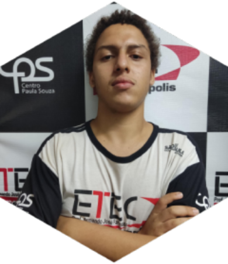

Nós, fundadores da MigrateDev, somos um grupo de estudantes da FATEC Jales, São Paulo.
O site foi criado para a matéria ministrada pela professora Josilene Franco Pacheco, na idealização de um blog/site para criação de conteúdo na web.
Então, viabilizamos a criação do site voltada para a empresa, MigrateDev.

Os alunos envolvidos nesse projeto, tanto na parte de pesquisa e desenvolvimento, é o resultado de um árduo trabalho em dupla, composto por Vinícius Oliveira e Yuri Ribeiro Abe.
